This week in CIT 360 I learned about collections like ArrayList, Queues, HashSet, and TreeMap
Java Collection means a single unit of objects. Java Collection framework provides many interfaces (Set, List, Queue, Deque) and classes (ArrayList, Vector, LinkedList, PriorityQueue, HashSet, LinkedHashSet, TreeSet).
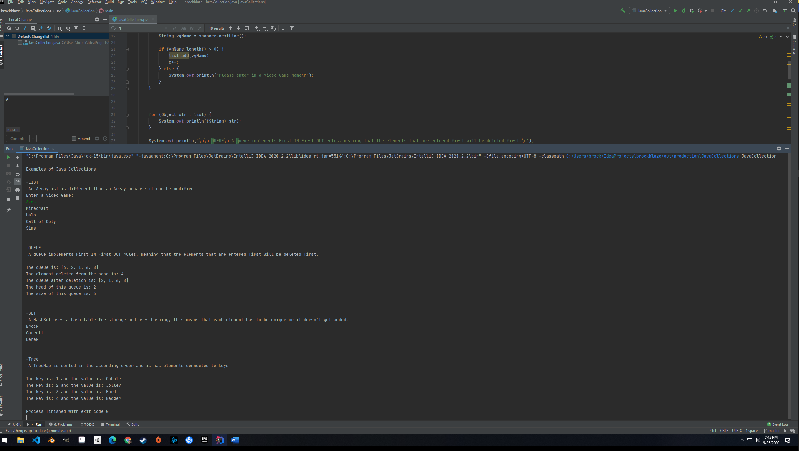This week I enter numbers into my program and divide them and then validated my numbers to make sure they were in fact numbers and I also did a catch an Arithmetic Exception to if you tried to divide by zero.
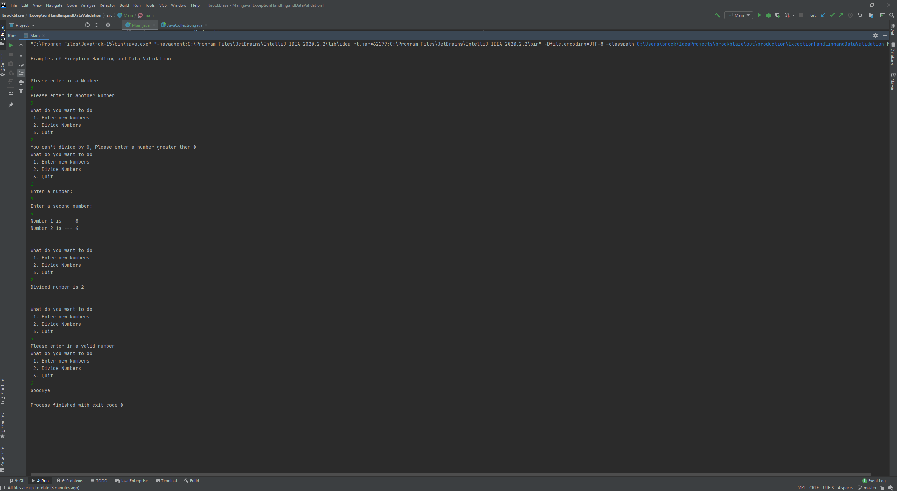This week I used an HTTP request to get a txt file from the internet and then convert that into a JSON file which then I used Jackson JSON parser to convert that json into a java object.
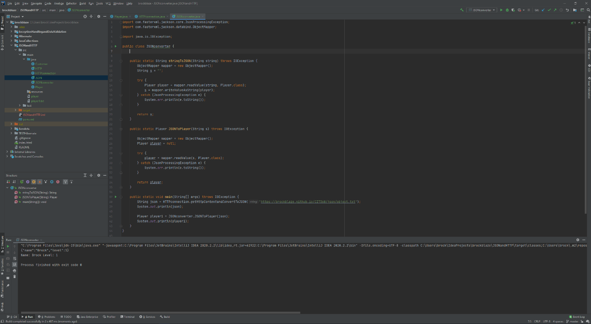This week I used Junit to run test on a method that added two numbers together, I used assertEquals, and assertNotSame and other functions to test the methods outputs.
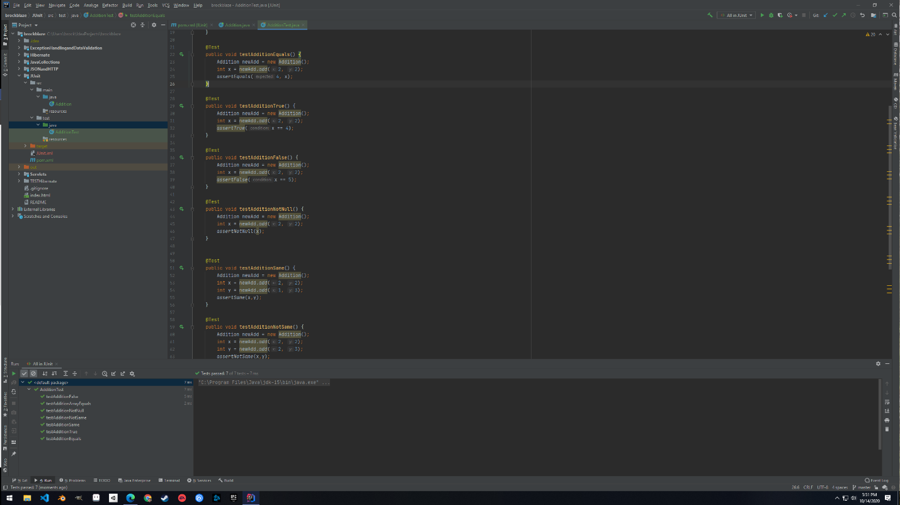This week I made an Use Case Document for a save system for a text base game.
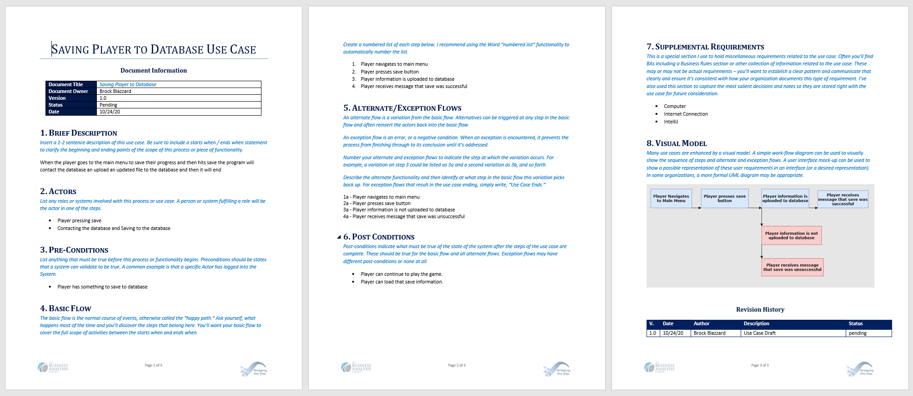This week I used servlets to make web applications for logging in and also a servlet to square a number a user entered in.
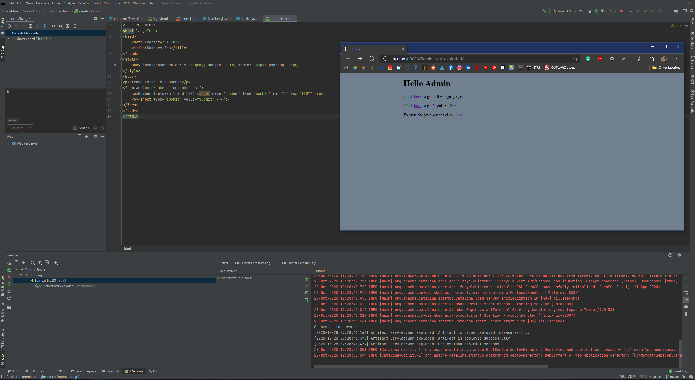This week I executed runnables that I set up, to run on different threads at the same time.
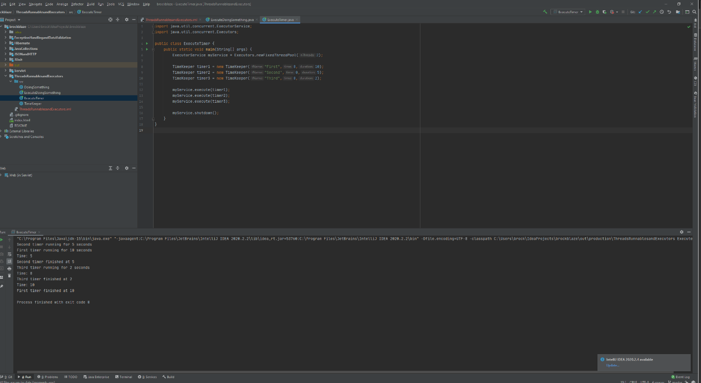This week I used the hibernate packages to connect to a MySQL database to pull data from.
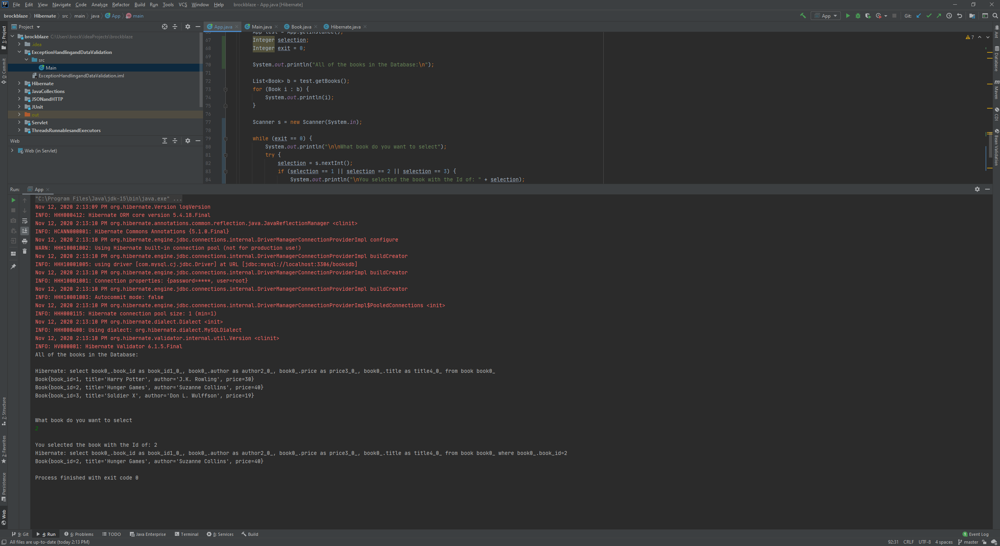This week I made multiple diagrams to help me understand systems that I would have in my final project.
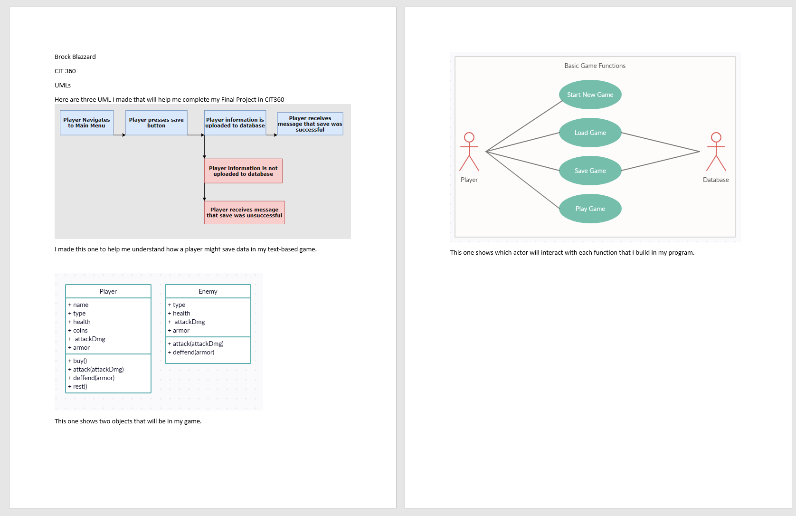
This week I wrote a proposal for my final Project which will be a Text
based game that used servels, hibernate, Exception Handling and Data
Validation, and Threads, Runnables, Executors.
The Application will work through a browser to have the user play a
text-base game that will have progression and randomization. This game
will also save player data to a database. The player will also load those
save game states from the database.
This week I work a lot on my final Project and was able to set up a lot of the base functions for my web app game. This is a screenshot of what the player will see when they click play game.
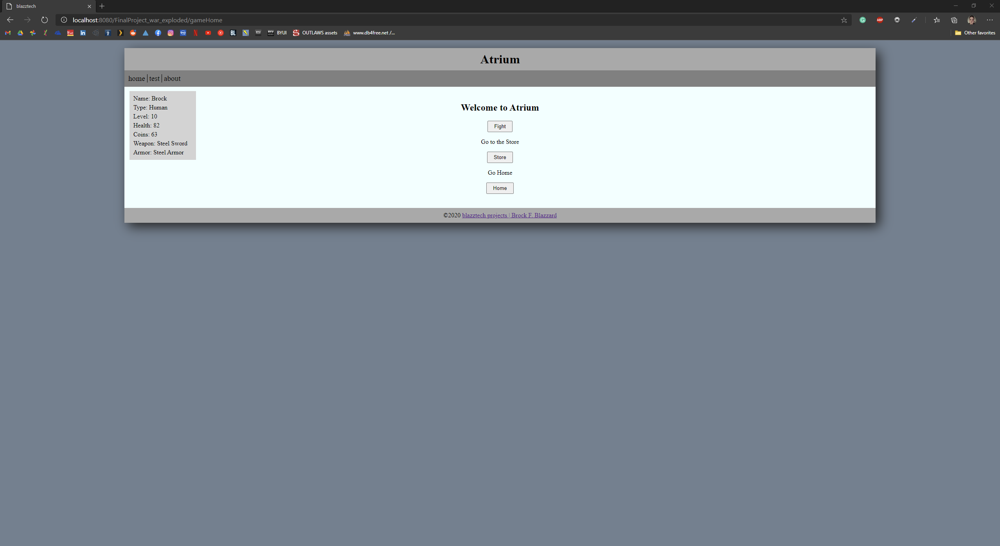This week I finished up my project and Use Case Document. I was able to Create and Delete Players from my Database using methods like session.update(Ojbect) and session.delete(Object) this mehtod for hibernate I found on the internet seem to work a lot better then trying to right mysql statements.
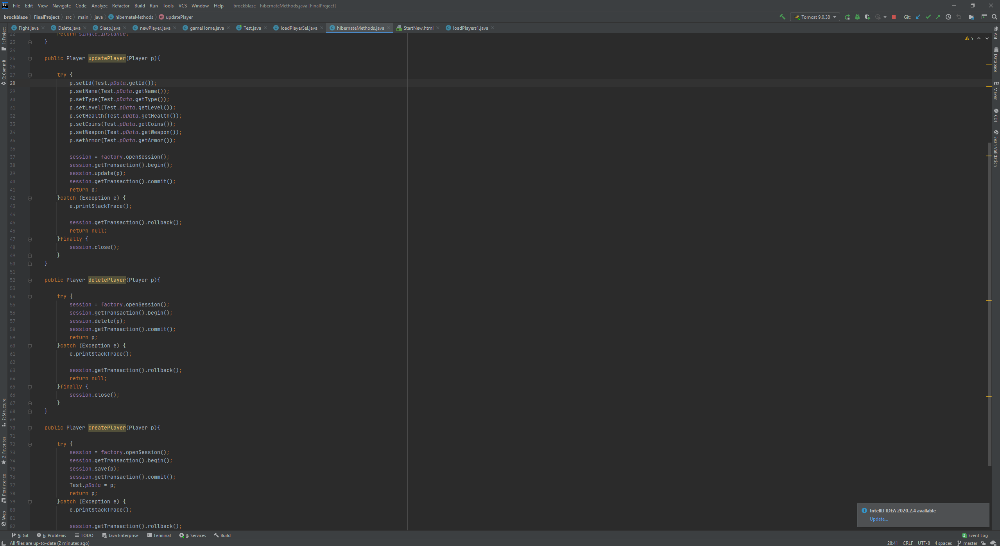